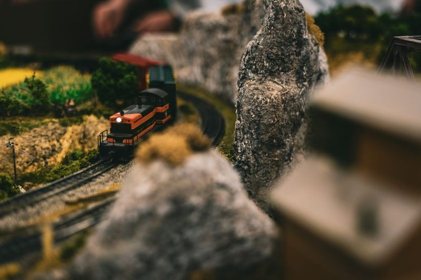

Track Plans · Jan 14, 2026
What Minimum Radius Really Costs You in a Spare Room
Tighter curves buy floor space back, but they charge rent somewhere else — in what stock will run, how it looks doing it, and how forgiving the layout stays five years from now.

Draw a curve into a spare-room plan and the tape measure decides before taste gets a vote. A radius that fits along the back wall might be four inches tighter than what a locomotive's instructions recommend, and on paper that four inches looks like nothing — a rounding error, the kind of number you'd wave off in any other context. In a room measured in feet, though, four inches of radius is the difference between a branch line that curves out of sight behind a rise and one that visibly fights the wall it's pinned against. The number printed on a set-track box or quoted in a locomotive's instructions is a minimum, not a recommendation, and the two get treated as interchangeable more often than they should. What follows isn't an argument for generous curves over tight ones — plenty of good layouts run on curves tighter than anyone would call ideal. It's an honest look at what a tight minimum radius actually costs, because every cost it charges gets paid by someone, usually months after the ballast has gone down.
What the Number on the Box Doesn't Tell You
A manufacturer's minimum radius is a pass/fail number: below it, the model derails or the coupler jams; above it, the model runs. It says nothing about how the model looks running, and it says nothing about which of your other stock shares the same fate. Two locomotives can carry an identical "minimum radius" spec and behave completely differently a couple of inches above it — one gliding through with room to spare, the other creeping around with its pilot truck straining sideways against the rail, audibly working for every inch. The number on the box is the edge of a cliff, not a comfortable seat a few steps back from it. Treat it as the edge, pick a working radius with margin above it, and the same curve that would have been a constant low-grade fight becomes background noise you stop noticing by the third running session.
What Won't Run, and What Runs Ugly
Tighten a curve past what a piece of stock is happy with and one of two things happens: it stops running, or it keeps running while looking wrong doing it. The first failure is honest — a locomotive that derails tells you immediately, and you either recurve the track or retire the locomotive from that curve. The second failure costs more over time, because it's easy to tolerate and hard to notice you're tolerating it. Long-wheelbase steam locomotives and full-length bogie coaches are the usual casualties: they'll often clear a tight minimum without derailing, but only by swinging their overhang wide enough to clip a platform edge or the next track laid too close beside it. Point work sited close to a tight curve compounds the problem, because the same overhang that clears open track can foul a turnout blade if the geometry was checked with a radius gauge instead of the actual stock.
The Curve You See Versus the Curve You Ride
There's a visual cost that has nothing to do with derailment. A tight curve reads as tight to the eye long before it reads as tight to the couplers — the outer rail's overhang, the way a long coach's ends swing in and out through the arc, an unbroken curve with no easement into or out of it. Real railways ease into a curve gradually, a transition that lets the radius tighten in stages rather than snapping from straight to full curvature at a single joint. Model track, especially set track straight from the box, mostly doesn't offer that transition unless it's deliberately built in with flex track and a run of radii rather than one fixed curve. The eye reads the abrupt version as a kink even when every wheel stays on the rail, and it's one of the fastest tells that separates a layout that photographs well from one that merely runs without incident.
A curve that clears every wheel on the layout can still fail the layout, if every glance at it reads as a curve trying too hard.— field note, Trackplan
A five-minute bench test before you spike anything: lay a loop of the tightest curve you're considering, unballasted, and run your longest locomotive and longest coach around it slowly. Watch the overhang, not the wheels. If either swings past the edge of the roadbed at the midpoint of the curve, the curve is telling you something the spec sheet didn't.
Where the Saved Space Actually Goes
The honest reason to tighten a radius is floor space, so it's worth being honest about how much space a few inches actually buys back. Shrinking a return loop's minimum radius by a few inches shaves roughly a square foot off its footprint on each side — real, usable space in a spare room, enough for a siding or a wider aisle. But that space rarely stays banked. It tends to get spent immediately on more track, because a smaller loop invites a second loop, and a plan with two tight loops is a different animal from a plan with one loop and room to breathe. A siding earns its keep by having a job to do, and the same discipline applies to a curve: tightening it should buy something specific — a passing siding, a wider aisle, a scene that couldn't otherwise fit — not just get filled with more track because the space appeared.
The Five-Year Question
The layout you draw this month has to survive the stock you haven't bought yet, and that's where minimum radius quietly compounds. A tight curve that clears everything currently on the shelf can become a wall a few years later, when a longer coach or a bigger locomotive arrives and simply won't clear it. Reworking a curve after the benchwork, scenery, and wiring are already in place is a much bigger job than choosing a slightly wider one at the start — often big enough that people don't do it, and instead quietly stop buying the stock that won't run there. A working radius chosen with margin above the printed minimum is one of the few decisions in a spare-room layout that gets cheaper to have made correctly every year the layout stays up.
None of this argues for the widest curve the room can physically hold. A layout built entirely around generous radii can leave no room for the siding, the fiddle yard, or the scene that made the plan worth building in the first place. It argues for treating radius as a trade you make on purpose, curve by curve, rather than a single number you set once and forget.
| Working radius vs. printed minimum | Tends to run cleanly | Tends to struggle |
|---|---|---|
| At the printed minimum | Short four-wheel and short bogie stock | Long steam locomotives, full-length coaches, close-set parallel track |
| A little above minimum | Most standard-length stock, moderate steam | Articulated locomotives, coaches with touching diaphragms |
| Well above minimum | Nearly everything in the catalogue | Little, but it demands far more floor space per loop |
| A mix of radii through one plan | Whatever stock was actually tested on each curve | Any locomotive routed onto a curve tighter than the one it was tested on |
A short checklist before committing a curve to the benchwork, worth running through more than once as stock changes:
- Test the longest locomotive and the longest coach you currently own — not the shortest, which will always look fine.
- Watch the overhang at the midpoint of the curve, where it's greatest, not just at the joints.
- Check clearance anywhere the curve runs parallel to another track, a platform edge, or a wall.
- Note whether the curve sits somewhere you could still widen later, or one that's locked in by benchwork already built.
A note on scope
This piece describes trade-offs in curve geometry as they tend to play out on spare-room layouts — it isn't a substitute for testing your own stock on your own curves, or for the clearances a manufacturer publishes for a specific model. Rolling stock varies enough between makers and eras that the only fully reliable test is the one done on your own bench.